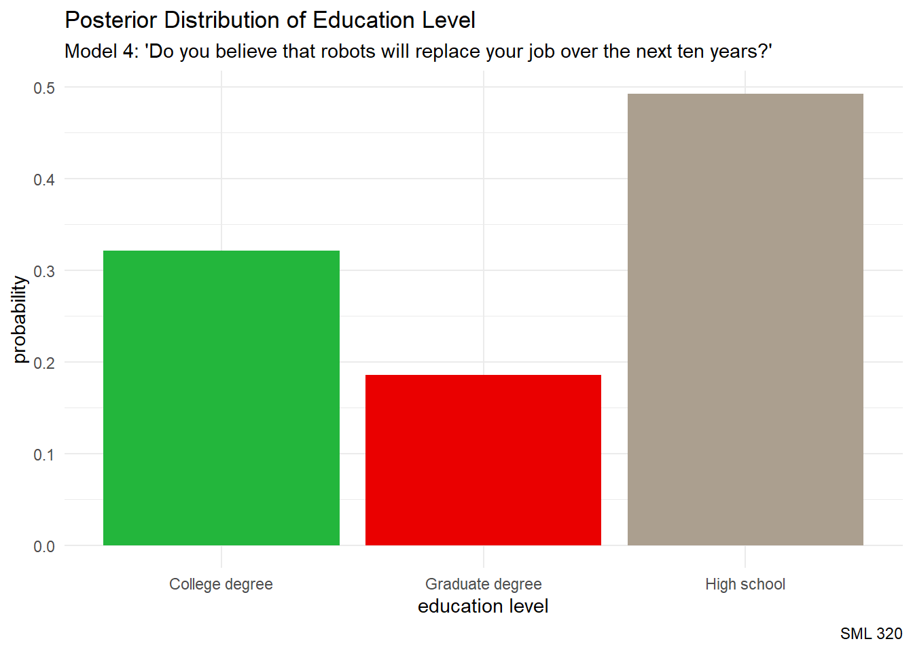

library("bayesrules")
library("e1071") #for the naiveBayes() function
library("ggtext")
library("janitor")
library("tidyverse")
knitr::opts_chunk$set(echo = TRUE)Naive Bayes Classification
Goal: Use Bayesian approaches to classification tasks
Objectives:
- explore the pros and cons of naive Bayes classification
- generalize classification tasks for more than two categories
Bayes Rules! Exercise 13.14
data(pulse_of_the_nation)
pulse_df <- pulse_of_the_nation |>
filter(education %in% c("Graduate degree", "College degree", "High school"))
pulse_df$education <- factor(pulse_df$education,
levels = c("Graduate degree",
"College degree",
"High school"))
pulse_df$robots <- factor(pulse_df$robots,
levels = c("Likely", "Unlikely"))
pulse_df$ghosts <- factor(pulse_df$ghosts,
levels = c("Yes", "No"))
# https://www.color-hex.com/color-palette/46386
ghostbusters_green <- "#23B63C"
ghostbusters_red <- "#EA0000"
ghostbusters_gray <- "#AB9F8F"Data
source: Pulse of the Nation survey by Cards Against Humanity
Poll 1: September 2017
707 observations
15 variables

Exploratory Data Analyses
pulse_df |>
ggplot(aes(x = income)) +
geom_density(fill = "green") +
labs(title = "Pulse of the Nation",
subtitle = "Income of participants",
caption = "SML 320",
x = "income (thousands of dollars)",
y = "") +
theme_minimal() +
theme(axis.text.y = element_blank(),
axis.ticks.y = element_blank())pulse_df |>
ggplot(aes(x = age)) +
geom_density(fill = "purple") +
labs(title = "Pulse of the Nation",
subtitle = "Age of participants",
caption = "SML 320",
x = "age",
y = "") +
theme_minimal() +
theme(axis.text.y = element_blank(),
axis.ticks.y = element_blank())\[Y = \begin{cases} G, & \text{Graduate Degree} \\ C, & \text{College Degree} \\ H, & \text{High School} \end{cases}\]
pulse_df |>
ggplot(aes(x = education, fill = education)) +
geom_bar(stat = "count") +
labs(title = "Pulse of the Nation",
subtitle = "Education attainment of participants",
caption = "SML 320",
x = "education",
y = "count") +
theme_minimal() +
theme(legend.position = "none")pulse_df |>
ggplot(aes(x = robots, fill = robots)) +
geom_bar(stat = "count") +
labs(title = "Pulse of the Nation",
subtitle = "Is it likely that robots would take your jobs within the next decade",
caption = "September 2017",
x = "",
y = "count") +
theme_minimal() +
theme(legend.position = "none")pulse_df |>
ggplot(aes(x = ghosts, fill = ghosts)) +
geom_bar(stat = "count") +
labs(title = "Pulse of the Nation",
subtitle = "Do you believe in ghosts?",
caption = "September 2017",
x = "",
y = "count") +
theme_minimal() +
theme(legend.position = "none")Variables
Response Variable
\(Y\): education
- categorical variable: education attained
Prediction
What degree does a 25-year-old who makes $50,000/year have?
Predictor Variables
- \(X_{1}\):
ghosts - \(X_{2}\):
age - \(X_{3}\):
income - \(X_{4}\):
robots
Ideas
Here, we have three categories, whereas logistic regression is limited to classifying binary response variables. As an alternative, naive Bayes classification
- can classify categorical response variables \(Y\) with two or more categories
- doesn’t require much theory beyond Bayes’ Rule
- it’s computationally efficient, i.e., doesn’t require MCMC simulation
But why is it called “naive”?
One Categorical Predictor
Suppose that a researcher encounters a participant who believes in ghosts. Our goal is to help this researcher guess the educational attainment of the participant: high school, college degree, or graduate degree.
pulse_df |>
ggplot(aes(x = education, fill = ghosts)) +
geom_bar(position = "fill") +
labs(title = "<span style = 'color:#AB9F8F'>For which education level is a<br>belief in ghosts most likely?</span>",
subtitle = "(focus on the <span style = 'color:#23B63C'>belief in ghosts</span> category)",
caption = "SML 320",
x = "education",
y = "proportion") +
scale_fill_manual(values = c("#23B63C", "#EA0000")) +
theme_minimal() +
theme(plot.title = element_markdown(face = "bold", size = 24),
plot.subtitle = element_markdown(size = 16))Recall: Bayes Rule
\[f(y|x_{1}) = \frac{\text{prior}\cdot\text{likelihood}}{\text{normalizing constant}} = \frac{f(y) \cdot L(y|x_{1})}{f(x_{1})}\] where, by the Law of Total Probability,
\[\begin{array}{rcl} f(x_{1}) & = & \displaystyle\sum_{\text{all } y'} f(y')L(y'|x_{1}) \\ ~ & = & f(y' = G)L(y' = G|x_{1}) + f(y' = C)L(y' = C|x_{1}) + f(y' = H)L(y' = H|x_{1}) \\ \end{array}\]
over our three education levels.
Calculation
pulse_df |>
janitor::tabyl(education, ghosts) |>
janitor::adorn_totals(c("row", "col")) education Yes No Total
Graduate degree 58 145 203
College degree 112 201 313
High school 84 107 191
Total 254 453 707Prior probabilities:
\[f(y = G) = \frac{203}{707}, \quad f(y = C) = \frac{313}{707}, \quad f(y = H) = \frac{191}{707}\]
Likelihoods:
\[\begin{array}{rcccl} L(y = G | x_{1} = 1) & = & \frac{58}{203} & \approx & 0.2857 \\ L(y = C | x_{1} = 1) & = & \frac{112}{313} & \approx & 0.3578 \\ L(y = H | x_{1} = 1) & = & \frac{84}{191} & \approx & 0.4398 \\ \end{array}\] Total probability:
\[f(x_{1} = 1) = \frac{203}{707}\cdot\frac{58}{203} + \frac{313}{707}\cdot\frac{112}{313} + \frac{191}{707}\cdot\frac{84}{191} = \frac{97}{270}\]
Bayes’ Rules:
\[\begin{array}{rcccccl} f(y = G | x_{1} = 1) & = & \frac{f(y = G) \cdot L(y = G | x_{1} = 1)}{f(x_{1} = 1)} = \frac{\frac{203}{707}\cdot\frac{58}{203}}{\frac{97}{270}} & \approx & 0.2283 \\ f(y = C | x_{1} = 1) & = & \frac{f(y = C) \cdot L(y = C | x_{1} = 1)}{f(x_{1} = 1)} = \frac{\frac{313}{707}\cdot\frac{112}{313}}{\frac{97}{270}} & \approx & 0.4409 \\ f(y = H | x_{1} = 1) & = & \frac{f(y = H) \cdot L(y = H | x_{1} = 1)}{f(x_{1} = 1)} = \frac{\frac{191}{707}\cdot\frac{84}{191}}{\frac{97}{270}} & \approx & 0.3307 \\ \end{array}\]
While the likelihoods pointed at the high school level, the survey had more college degree participants, so the posterior distribution balance, so far, assigns the highest probability to the college degree level
One Numerical Predictor
pulse_df |>
ggplot(aes(x = age, fill = education)) +
geom_density(alpha = 0.7) +
geom_vline(xintercept = 25, linetype = "dashed", linewidth = 3) +
labs(title = "<span style = 'color:#EA0000'>For which education level is a<br>25-year-old the most common?</span>",
subtitle = "one numerical predictor",
caption = "R4DS Book Club") +
scale_fill_manual(values = c(ghostbusters_green, ghostbusters_red , ghostbusters_gray)) +
theme_minimal() +
theme(axis.text.y = element_blank(),
axis.ticks.y = element_blank(),
plot.title = element_markdown(face = "bold", size = 24),
plot.subtitle = element_markdown(size = 16))Our data points to our participant having a college degree
- we could consider the fact that college degree is the most frequent of these three education levels
- difficult to compute likelihood \(L(y = C | x_{2} = 25)\)
Naivety
This is where one “naive” part of naive Bayes classification comes into play. The naive Bayes method typically assumes that any quantitative predictor, here \(X_{2}\), is continuous and conditionally normal:
\[\begin{array}{rcl} X_{2} | (Y = G) & \sim & N(\mu_{G}, \sigma_{G}^{2}) \\ X_{2} | (Y = C) & \sim & N(\mu_{C}, \sigma_{C}^{2}) \\ X_{2} | (Y = H) & \sim & N(\mu_{H}, \sigma_{H}^{2}) \\ \end{array}\]
# Calculate sample mean and sd for each Y group
pulse_df |>
group_by(education) |>
summarize(mean = mean(age, na.rm = TRUE),
sd = sd(age, na.rm = TRUE))# A tibble: 3 × 3
education mean sd
<fct> <dbl> <dbl>
1 Graduate degree 51.3 15.3
2 College degree 49.0 16.1
3 High school 50.2 17.2Priors
pulse_df |>
ggplot(aes(x = age, color = education)) +
stat_function(fun = dnorm, args = list(mean = 51.34975, sd = 15.27409),
aes(color = "Graduate degree"), linewidth = 3) +
stat_function(fun = dnorm, args = list(mean = 50.17277, sd = 17.18495 ),
aes(color = "High school"), linewidth = 3) +
stat_function(fun = dnorm, args = list(mean = 48.98403, sd = 16.10412),
aes(color = "College degree"), linewidth = 3) +
geom_vline(xintercept = 25, linetype = "dashed") +
labs(title = "<span style = 'color:#23B63C'>Prior Probabilities</span>",
subtitle = "conditionally normal",
caption = "R4DS Book Club") +
scale_color_manual(values = c(ghostbusters_green, ghostbusters_red , ghostbusters_gray)) +
theme_minimal() +
theme(plot.title = element_markdown(face = "bold", size = 24),
plot.subtitle = element_markdown(size = 16))Likelihoods
Computing the likelihoods in R:
# L(y = G | x_2 = 25) = 0.0060
dnorm(25, mean = 51.3, sd = 15.3)
# L(y = C | x_2 = 25) = 0.0082
dnorm(25, mean = 49.0, sd = 16.1)
# L(y = H | x_2 = 25) = 0.0079
dnorm(25, mean = 50.2, sd = 17.2)Total probability:
\[f(x_{2} = 25) = \frac{203}{707}\cdot(0.0060) + \frac{313}{707}\cdot(0.0082) + \frac{191}{707}\cdot(0.0079) \approx 0.0074\]
Bayes Rule
\[\begin{array}{rcccccl} f(y = G | x_{2} = 25) & = & \frac{f(y = G) \cdot L(y = G | x_{2} = 25)}{f(x_{2} = 25)} = \frac{\frac{203}{707}\cdot(0.0060)}{0.0074} & \approx & 0.2328 \\ f(y = C | x_{2} = 25) & = & \frac{f(y = C) \cdot L(y = C | x_{2} = 25)}{f(x_{2} = 25)} = \frac{\frac{313}{707}\cdot(0.0082)}{0.0074} & \approx & 0.4906 \\ f(y = H | x_{2} = 25) & = & \frac{f(y = H) \cdot L(y = H | x_{2} = 25)}{f(x_{2} = 25)} = \frac{\frac{191}{707}\cdot(0.0079)}{0.0074} & \approx & 0.2884 \\ \end{array}\]
This model also places the most probability the the participant at the college degree education level.
Another Numerical Predictor
pulse_df |>
ggplot(aes(x = income, fill = education)) +
geom_density(alpha = 0.7) +
geom_vline(xintercept = 50, linetype = "dashed", linewidth = 3) +
labs(title = "<span style = 'color:#AB9F8F'>For which education level is a<br>$50k income the most common?</span>",
subtitle = "one numerical predictor",
caption = "R4DS Book Club") +
scale_fill_manual(values = c(ghostbusters_green, ghostbusters_red , ghostbusters_gray)) +
theme_minimal() +
theme(axis.text.y = element_blank(),
axis.ticks.y = element_blank(),
plot.title = element_markdown(face = "bold", size = 24),
plot.subtitle = element_markdown(size = 16))Naivety
This is where one “naive” part of naive Bayes classification comes into play. The naive Bayes method typically assumes that any quantitative predictor, here \(X_{3}\), is continuous and conditionally normal:
\[\begin{array}{rcl} X_{3} | (Y = G) & \sim & N(\mu_{G}, \sigma_{G}^{2}) \\ X_{3} | (Y = C) & \sim & N(\mu_{C}, \sigma_{C}^{2}) \\ X_{3} | (Y = H) & \sim & N(\mu_{H}, \sigma_{H}^{2}) \\ \end{array}\]
# Calculate sample mean and sd for each Y group
pulse_df |>
group_by(education) |>
summarize(mean = mean(income, na.rm = TRUE),
sd = sd(income, na.rm = TRUE))# A tibble: 3 × 3
education mean sd
<fct> <dbl> <dbl>
1 Graduate degree 114. 71.0
2 College degree 102. 59.7
3 High school 63.9 35.5Priors
pulse_df |>
ggplot(aes(x = income, color = education)) +
stat_function(fun = dnorm, args = list(mean = 114, sd = 71),
aes(color = "Graduate degree"), linewidth = 3) +
stat_function(fun = dnorm, args = list(mean = 102, sd = 59.7),
aes(color = "College degree"), linewidth = 3) +
stat_function(fun = dnorm, args = list(mean = 63.9, sd = 35.5),
aes(color = "High school"), linewidth = 3) +
geom_vline(xintercept = 50, linetype = "dashed", linewidth = 2) +
labs(title = "<span style = 'color:#AB9F8F'>Prior Probabilities</span>",
subtitle = "conditionally normal",
caption = "R4DS Book Club") +
scale_color_manual(values = c(ghostbusters_green, ghostbusters_red , ghostbusters_gray)) +
theme_minimal() +
theme(plot.title = element_markdown(face = "bold", size = 24),
plot.subtitle = element_markdown(size = 16))Likelihoods
Computing the likelihoods in R:
# L(y = G | x_3 = 50) = 0.0037
dnorm(50, mean = 114, sd = 71)
# L(y = C | x_3 = 50) = 0.0046
dnorm(50, mean = 102, sd = 59.7)
# L(y = H | x_3 = 50) = 0.0104
dnorm(50, mean = 63.9, sd = 35.5)Total probability:
\[f(x_{3} = 50) = \frac{203}{707}\cdot(0.0037) + \frac{313}{707}\cdot(0.0046) + \frac{191}{707}\cdot(0.0104) \approx 0.0059\]
Bayes Rule
\[\begin{array}{rcccccl} f(y = G | x_{3} = 50) & = & \frac{f(y = G) \cdot L(y = G | x_{3} = 50)}{f(x_{3} = 50)} = \frac{\frac{203}{707}\cdot(0.0037)}{0.0059} & \approx & 0.1801 \\ f(y = C | x_{3} = 50) & = & \frac{f(y = C) \cdot L(y = C | x_{3} = 50)}{f(x_{3} = 50)} = \frac{\frac{313}{707}\cdot(0.0046)}{0.0059} & \approx & 0.3452 \\ f(y = H | x_{3} = 50) & = & \frac{f(y = H) \cdot L(y = H | x_{3} = 50)}{f(x_{3} = 50)} = \frac{\frac{191}{707}\cdot(0.0104)}{0.0059} & \approx & 0.4762 \\ \end{array}\]
This model places the most probability the the participant at the high school education level.
Another Categorical Predictor
Suppose that a researcher encounters a participant who believes that it is likely that their job will be replaced by robots over the next 10 years.. Our goal is to help this researcher guess the educational attainment of the participant: high school, college degree, or graduate degree.

pulse_df |>
ggplot(aes(x = education, fill = robots)) +
geom_bar(position = "fill") +
labs(title = "<span style = 'color:#AB9F8F'>For which education level is a<br>belief in robot takeover most likely?</span>",
subtitle = "(focus on the <span style = 'color:#23B63C'>likely</span> category)",
caption = "SML 320",
x = "education",
y = "proportion") +
scale_fill_manual(values = c("#23B63C", "#EA0000")) +
theme_minimal() +
theme(plot.title = element_markdown(face = "bold", size = 24),
plot.subtitle = element_markdown(size = 16))Likelihoods
pulse_df |>
janitor::tabyl(education, robots) |>
janitor::adorn_totals(c("row", "col")) education Likely Unlikely Total
Graduate degree 26 177 203
College degree 45 268 313
High school 69 122 191
Total 140 567 707\[\begin{array}{rcccl} L(y = G | x_{4} = 1) & = & \frac{26}{203} & \approx & 0.1281 \\ L(y = C | x_{4} = 1) & = & \frac{45}{313} & \approx & 0.1438 \\ L(y = H | x_{4} = 1) & = & \frac{69}{191} & \approx & 0.3089 \\ \end{array}\]
Total probability:
\[f(x_{4} = 1) = \frac{203}{707}\cdot\frac{26}{203} + \frac{313}{707}\cdot\frac{45}{313} + \frac{191}{707}\cdot\frac{69}{191} = \frac{143}{707}\]
Bayes Rule
\[\begin{array}{rcccccl} f(y = G | x_{4} = 1) & = & \frac{f(y = G) \cdot L(y = G | x_{4} = 1)}{f(x_{4} = 1)} = \frac{\frac{203}{707}\cdot\frac{26}{203}}{\frac{143}{707}} & \approx & 0.1818 \\ f(y = C | x_{4} = 1) & = & \frac{f(y = C) \cdot L(y = C | x_{4} = 1)}{f(x_{4} = 1)} = \frac{\frac{313}{707}\cdot\frac{45}{313}}{\frac{143}{707}} & \approx & 0.3147 \\ f(y = H | x_{4} = 1) & = & \frac{f(y = H) \cdot L(y = H | x_{4} = 1)}{f(x_{4} = 1)} = \frac{\frac{191}{707}\cdot\frac{69}{191}}{\frac{143}{707}} & \approx & 0.4825 \\ \end{array}\]
This model places the most probability the the participant at the high school education level.
Two Numerical Predictors
pulse_df |>
ggplot(aes(x = age, y = income,
color = education)) +
geom_point(size = 3) +
geom_segment(aes(x = 25, y = 0, xend = 25, yend = 50),
color = "black", linetype = 2, linewidth = 2) +
geom_segment(aes(x = 0, y = 50, xend = 25, yend = 50),
color = "black", linetype = 2, linewidth = 2) +
labs(title = "<span style = 'color:#AB9F8F'>Two Predictor Variables</span>",
subtitle = "25-year-old with $50k salary",
caption = "R4DS Book Club") +
scale_color_manual(values = c(ghostbusters_green, ghostbusters_red , ghostbusters_gray)) +
theme_minimal() +
theme(plot.title = element_markdown(face = "bold", size = 24),
plot.subtitle = element_markdown(size = 16))Generalizing Bayes’ Rule:
\[f(y | x_{2}, x_{3}) = \frac{f(y) \cdot L(y | x_{2}, x_{3})}{\sum_{y'} f(y') \cdot L(y' | x_{2}, x_{3})}\]
Another “naive” assumption of conditionally independent:
\[L(y | x_{2}, x_{3}) = f(x_{2}, x_{3} | y) = f(x_{2} | y) \cdot f(x_{3} | y)\]
- mathematically efficient
- but what about correlation?
Likelihoods
# L(y = G | x_2 = 25) = 0.0060
dnorm(25, mean = 51.3, sd = 15.3)
# L(y = C | x_2 = 25) = 0.0082
dnorm(25, mean = 49.0, sd = 16.1)
# L(y = H | x_2 = 25) = 0.0079
dnorm(25, mean = 50.2, sd = 17.2)# L(y = G | x_3 = 50) = 0.0037
dnorm(50, mean = 114, sd = 71)
# L(y = C | x_3 = 50) = 0.0046
dnorm(50, mean = 102, sd = 59.7)
# L(y = H | x_3 = 50) = 0.0104
dnorm(50, mean = 63.9, sd = 35.5)\[f(x_2 = 50, x_{3} = 50) = \frac{203}{707}\cdot(0.0060)(0.0037) + \frac{313}{707}\cdot(0.0082)(0.0046) + \frac{191}{707}\cdot(0.0079)(0.0104) \approx 0.00004527\]
Bayes Rule
\[\begin{array}{rcccccl} f(y = G | x_2 = 50, x_{3} = 50) & = & \frac{f(y = G) \cdot L(y = G | x_2 = 50, x_{3} = 50)}{f(x_2 = 50, x_{3} = 50)} = \frac{\frac{203}{707}\cdot(0.0060)(0.0037)}{0.00004527} & \approx & 0.1398 \\ f(y = C | x_2 = 50, x_{3} = 50) & = & \frac{f(y = C) \cdot L(y = C | x_2 = 50, x_{3} = 50)}{f(x_2 = 50, x_{3} = 50)} = \frac{\frac{313}{707}\cdot(0.0082)(0.0046)}{0.00004527} & \approx & 0.3660 \\ f(y = H | x_2 = 50, x_{3} = 50) & = & \frac{f(y = H) \cdot L(y = H | x_2 = 50, x_{3} = 50)}{f(x_2 = 50, x_{3} = 50)} = \frac{\frac{191}{707}\cdot(0.0079)(0.0104)}{0.00004527} & \approx & 0.4942 \\ \end{array}\]
This model places the most probability the the participant at the high school education level.
Predictions
naive_model_1 <- e1071::naiveBayes(education ~ ghosts, data = pulse_df)predict(naive_model_1,
newdata = data.frame(ghosts = "Yes"),
type = "raw") |> round(digits = 4) Graduate degree College degree High school
[1,] 0.2283 0.4409 0.3307predict(naive_model_1,
newdata = data.frame(ghosts = "Yes"))[1] College degree
Levels: Graduate degree College degree High schoolnaive_model_2 <- e1071::naiveBayes(education ~ age, data = pulse_df)predict(naive_model_2,
newdata = data.frame(age = 25),
type = "raw") |> round(digits = 4) Graduate degree College degree High school
[1,] 0.2271 0.4852 0.2877predict(naive_model_2,
newdata = data.frame(age = 25))[1] College degree
Levels: Graduate degree College degree High schoolnaive_model_3 <- e1071::naiveBayes(education ~ income, data = pulse_df)predict(naive_model_3,
newdata = data.frame(income = 50),
type = "raw") |> round(digits = 4) Graduate degree College degree High school
[1,] 0.1813 0.3426 0.4761predict(naive_model_3,
newdata = data.frame(income = 50))[1] High school
Levels: Graduate degree College degree High schoolnaive_model_4 <- e1071::naiveBayes(education ~ robots, data = pulse_df)predict(naive_model_4,
newdata = data.frame(robots = "Likely"),
type = "raw") |> round(digits = 4) Graduate degree College degree High school
[1,] 0.1857 0.3214 0.4929predict(naive_model_4,
newdata = data.frame(robots = "Likely"))[1] High school
Levels: Graduate degree College degree High schoolTwo Numerical Predictor Variables
naive_model_5 <- e1071::naiveBayes(education ~ age + income,
data = pulse_df)predict(naive_model_5,
newdata = data.frame(age = 25, income = 50),
type = "raw") |> round(digits = 4) Graduate degree College degree High school
[1,] 0.1398 0.366 0.4942predict(naive_model_5,
newdata = data.frame(age = 25, income = 50))[1] High school
Levels: Graduate degree College degree High schoolExtended Model with all 4 Predictor Variables
naive_model_6 <- e1071::naiveBayes(education ~
ghosts + age + income + robots,
data = pulse_df)predict(naive_model_6,
newdata = data.frame(ghosts = "Yes",
age = 25,
income = 50,
robots = "Likely"),
type = "raw") |> round(digits = 4) Graduate degree College degree High school
[1,] 0.0499 0.1837 0.7663predict(naive_model_6,
newdata = data.frame(ghosts = "Yes",
age = 25,
income = 50,
robots = "Likely"))[1] High school
Levels: Graduate degree College degree High schoolConfusion
Cross-Validation
set.seed(320)
naive_model_1_cv <- bayesrules::naive_classification_summary_cv(
model = naive_model_1, data = pulse_df, y = "education", k = 10)
naive_model_2_cv <- bayesrules::naive_classification_summary_cv(
model = naive_model_2, data = pulse_df, y = "education", k = 10)
naive_model_3_cv <- bayesrules::naive_classification_summary_cv(
model = naive_model_3, data = pulse_df, y = "education", k = 10)
naive_model_4_cv <- bayesrules::naive_classification_summary_cv(
model = naive_model_4, data = pulse_df, y = "education", k = 10)
naive_model_5_cv <- bayesrules::naive_classification_summary_cv(
model = naive_model_5, data = pulse_df, y = "education", k = 10)
naive_model_6_cv <- bayesrules::naive_classification_summary_cv(
model = naive_model_6, data = pulse_df, y = "education", k = 10)
Accuracy of a Confusion Matrix
Confusion_Accuracy <- function(conf_mat){
# This function will compute the accuracy of a confusion matrix
m <- nrow(conf_mat)
numbers_list <- stringr::str_extract_all(unlist(conf_mat),
"\\([0-9]+\\)")
numbers_string <- paste(unlist(numbers_list))
numbers_string <- stringr::str_replace_all(numbers_string, "\\(", "")
numbers_string <- stringr::str_replace_all(numbers_string, "\\)", "")
numbers <- as.numeric(numbers_string)
M <- matrix(numbers, nrow = m, ncol = m)
# return
sum(diag(M)) / sum(M)
}naive_model_1_cv$cv education Graduate degree College degree High school
Graduate degree 0.00% (0) 100.00% (203) 0.00% (0)
College degree 0.00% (0) 100.00% (313) 0.00% (0)
High school 0.00% (0) 100.00% (191) 0.00% (0)Confusion_Accuracy(naive_model_1_cv$cv)[1] 0.4427157naive_model_2_cv$cv education Graduate degree College degree High school
Graduate degree 0.00% (0) 99.01% (201) 0.99% (2)
College degree 0.00% (0) 98.40% (308) 1.60% (5)
High school 0.00% (0) 99.48% (190) 0.52% (1)Confusion_Accuracy(naive_model_2_cv$cv)[1] 0.437058naive_model_3_cv$cv education Graduate degree College degree High school
Graduate degree 6.40% (13) 65.02% (132) 28.57% (58)
College degree 3.19% (10) 57.83% (181) 38.98% (122)
High school 0.00% (0) 30.89% (59) 69.11% (132)Confusion_Accuracy(naive_model_3_cv$cv)[1] 0.4611033naive_model_4_cv$cv education Graduate degree College degree High school
Graduate degree 0.00% (0) 87.19% (177) 12.81% (26)
College degree 0.00% (0) 85.62% (268) 14.38% (45)
High school 0.00% (0) 63.87% (122) 36.13% (69)Confusion_Accuracy(naive_model_4_cv$cv)[1] 0.476662naive_model_5_cv$cv education Graduate degree College degree High school
Graduate degree 5.42% (11) 66.50% (135) 28.08% (57)
College degree 4.15% (13) 58.47% (183) 37.38% (117)
High school 0.00% (0) 32.98% (63) 67.02% (128)Confusion_Accuracy(naive_model_5_cv$cv)[1] 0.4554455naive_model_6_cv$cv education Graduate degree College degree High school
Graduate degree 7.39% (15) 78.33% (159) 14.29% (29)
College degree 5.75% (18) 69.97% (219) 24.28% (76)
High school 0.52% (1) 45.55% (87) 53.93% (103)Confusion_Accuracy(naive_model_6_cv$cv)[1] 0.476662Model Selection
| Naive Bayes on Pulse Survey Data | |
| Cross validation metrics | |
| model | Accuracy |
|---|---|
| 1 | 0.442716 |
| 2 | 0.437058 |
| 3 | 0.461103 |
| 4 | 0.476662 |
| 5 | 0.455446 |
| 6 | 0.476662 |
Return of the Best Model
pulse_df |>
ggplot(aes(x = education, fill = robots)) +
geom_bar(position = "fill") +
labs(title = "<span style = 'color:#AB9F8F'>For which education level is a<br>belief in robot takeover most likely?</span>",
subtitle = "(focus on the <span style = 'color:#23B63C'>likely</span> category)",
caption = "SML 320",
x = "education",
y = "proportion") +
scale_fill_manual(values = c("#23B63C", "#EA0000")) +
theme_minimal() +
theme(plot.title = element_markdown(face = "bold", size = 24),
plot.subtitle = element_markdown(size = 16))
edu_levels <- c("Graduate degree",
"College degree",
"High school")
preds <- predict(naive_model_4,
newdata = data.frame(robots = "Likely"),
type = "raw")
probs <- as.numeric(paste(preds))
df_for_post_plot <- data.frame(edu_levels, probs)
df_for_post_plot |>
ggplot(aes(x = edu_levels, y = probs, fill = edu_levels)) +
geom_bar(stat = "identity") +
labs(title = "Posterior Distribution of Education Level",
subtitle = "Model 4: 'Do you believe that robots will replace your job over the next ten years?'",
caption = "SML 320",
x = "education level",
y = "probability") +
scale_fill_manual(values = c(ghostbusters_green, ghostbusters_red , ghostbusters_gray)) +
theme_minimal() +
theme(legend.position = "none")Summary
Naive Bayes
\[f(y | x_{1}, x_{2}, ..., x_{p}) = \frac{f(y) \cdot L(y | x_{1}, x_{2}, ..., x_{p})}{\sum_{y'} f(y') \cdot L(y' | x_{1}, x_{2}, ..., x_{p})}\]
- conditionally independent \(\rightarrow\) computationally efficient
- generalizes to more than two categories
- assumptions violated commonly in practice
Logistic Regression
\[\log\left(\frac{\pi}{1-\pi}\right) = \beta_{0} + \beta_{1}X_{1} + \cdots + \beta_{k}X_{p}\]
- binary classification
- coefficients \(\rightarrow\) illumination of the relationships among these variables
Footnotes
Session Info
sessionInfo()R version 4.3.2 (2023-10-31 ucrt)
Platform: x86_64-w64-mingw32/x64 (64-bit)
Running under: Windows 10 x64 (build 19045)
Matrix products: default
locale:
[1] LC_COLLATE=English_United States.utf8
[2] LC_CTYPE=English_United States.utf8
[3] LC_MONETARY=English_United States.utf8
[4] LC_NUMERIC=C
[5] LC_TIME=English_United States.utf8
time zone: America/New_York
tzcode source: internal
attached base packages:
[1] stats graphics grDevices utils datasets methods base
other attached packages:
[1] e1071_1.7-13 lubridate_1.9.3 forcats_1.0.0 stringr_1.5.1
[5] dplyr_1.1.4 purrr_1.0.2 readr_2.1.5 tidyr_1.3.1
[9] tibble_3.2.1 ggplot2_3.4.3 tidyverse_2.0.0 rstanarm_2.21.4
[13] Rcpp_1.0.11 rstan_2.32.5 StanHeaders_2.32.5 janitor_2.2.0
[17] gt_0.9.0 ggtext_0.1.2 bayesplot_1.10.0 bayesrules_0.0.2
loaded via a namespace (and not attached):
[1] gridExtra_2.3 inline_0.3.19 rlang_1.1.1 magrittr_2.0.3
[5] snakecase_0.11.0 matrixStats_1.0.0 compiler_4.3.2 loo_2.6.0
[9] callr_3.7.3 vctrs_0.6.5 reshape2_1.4.4 pkgconfig_2.0.3
[13] crayon_1.5.2 fastmap_1.1.1 ellipsis_0.3.2 labeling_0.4.3
[17] utf8_1.2.4 threejs_0.3.3 promises_1.2.1 rmarkdown_2.24
[21] tzdb_0.4.0 markdown_1.8 ps_1.7.5 nloptr_2.0.3
[25] xfun_0.40 jsonlite_1.8.7 later_1.3.1 parallel_4.3.2
[29] prettyunits_1.2.0 R6_2.5.1 dygraphs_1.1.1.6 stringi_1.8.3
[33] boot_1.3-28.1 knitr_1.43 zoo_1.8-12 base64enc_0.1-3
[37] httpuv_1.6.11 Matrix_1.6-1.1 splines_4.3.2 igraph_1.4.3
[41] timechange_0.3.0 tidyselect_1.2.0 rstudioapi_0.15.0 yaml_2.3.8
[45] codetools_0.2-19 miniUI_0.1.1.1 curl_5.0.2 processx_3.8.1
[49] pkgbuild_1.4.0 lattice_0.21-9 plyr_1.8.8 withr_3.0.0
[53] shiny_1.7.5 groupdata2_2.0.2 evaluate_0.21 survival_3.5-7
[57] proxy_0.4-27 RcppParallel_5.1.7 xml2_1.3.6 xts_0.13.1
[61] pillar_1.9.0 DT_0.28 stats4_4.3.2 shinyjs_2.1.0
[65] generics_0.1.3 hms_1.1.3 rstantools_2.3.1 munsell_0.5.0
[69] scales_1.2.1 minqa_1.2.5 gtools_3.9.4 xtable_1.8-4
[73] class_7.3-22 glue_1.6.2 tools_4.3.2 shinystan_2.6.0
[77] lme4_1.1-33 colourpicker_1.2.0 grid_4.3.2 QuickJSR_1.1.3
[81] crosstalk_1.2.0 colorspace_2.1-0 nlme_3.1-163 cli_3.6.1
[85] fansi_1.0.6 V8_4.3.0 gtable_0.3.4 digest_0.6.33
[89] farver_2.1.1 htmlwidgets_1.6.2 htmltools_0.5.6 lifecycle_1.0.4
[93] mime_0.12 gridtext_0.1.5 shinythemes_1.2.0 MASS_7.3-60